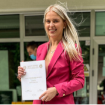

Online Resume
Vesna Nedic

- Summary
I’ve done Masters in Electronics, telecommunications and measurements in biomedical engineering at the Faculty of Technical Sciences, University of Novi Sad.
- Education
- MSc in Biomedical engineering - Electronics, telecommunications and measurements in biomedical engineering
- Skills
- Easily adaptable to new people and environments
- Persistant - enjoy challenges and never give up
- Team-oriented - always ready to share knowledge with others
- Positive and communicative - love working with people
- Work Experience
- Real estate agent (sales) - “NS Group nekretnine”, Novi Sad, Serbia (from September 2020 - January 2023)
- Front desk attendant - Marriott Hotel, Bethany Beach, DE, USA (summer season 2019 and 2023)
- Server - “Blue Crab” restaurant, Bethany Beach, DE, USA (summer season 2019 and 2023)
- Sales Development Representative - “Mitto”, Belgrade, Serbia (from January 2024 - now)